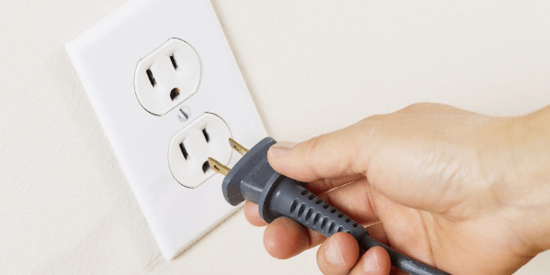
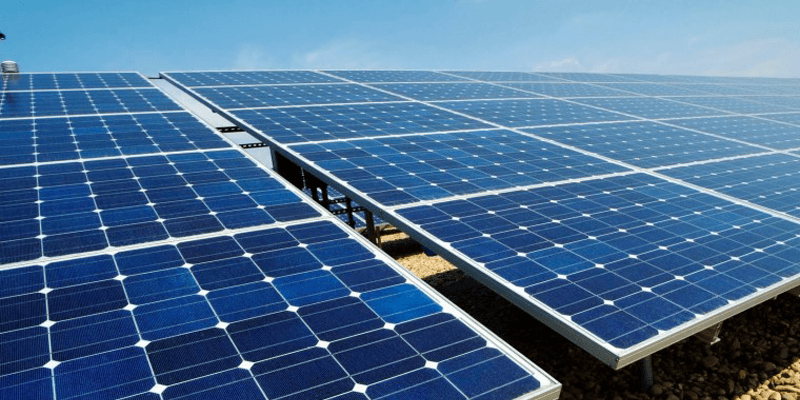
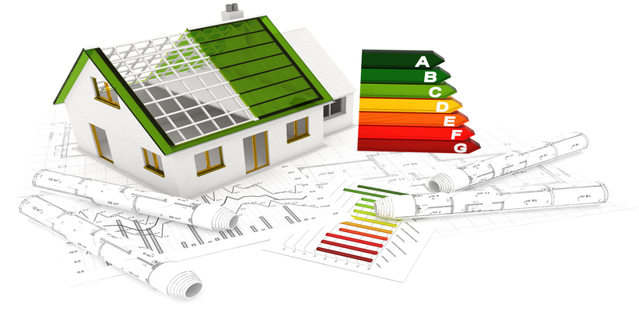

O Laudo Elétrico é um tipo de laudo pericial que trata dos aspectos técnicos envolvidos numa instalação elétrica. Ele deve ser emitido por um Engenheiro Eletricista com base em inspeções e medições realizadas nas instalações elétricas, à luz dos requisitos estabelecidos pelas normas técnicas da ABNT (Associação Brasileira de Normas Técnicas).
Como trata da Segurança que pode afetar a vida e o patrimônio das pessoas e empresas, apenas profissionais com larga experiência devem emitir um laudo.
Um Laudo Elétrico deve considerar os aspectos técnicos (conformidade com as normas técnicas), jurídicos (leis e normas), de proteção contra incêndio e de segurança aos trabalhadores e usuários de eletricidade.
Instalações Elétricas

Novos Projetos e Reformas
Todo sistema elétrico necessita de um projeto inicial e que informe todos os parâmetros para ser executado. Para isso, a ENETEC Consultoria fornece estudos completos de Análise de Plantas Elétricas, Adequação do Padrão de Entrada e Orçamento de Materiais, para que, assim, possa ser executado de forma viável e correta um projeto de instalações elétricas, bem como alterações no sistema vigente no local.
Dimensionamento de Sistema de Proteção contra Descargas Atmosféricas
A ENETEC Consultoria fornece o dimensionamento de sistemas para a proteção contra descargas elétricas, com o objetivo de prevenir danos à instalação e seus equipamentos, evitando despesas futuras.
Projetos Luminotécnicos
Com a iluminação apropriada, certos serviços podem ser realizados com maior qualidade e eficiência, ou até mesmo a ambientação do local pode ser modificada. Para isso, a ENETEC Consultoria fornece projetos luminotécnicos de interiores e exteriores com diferentes objetivos, sempre visando à análise do local em questão e à iluminação apropriada para cada caso.
Instalações Telefônicas
A ENETEC Consultoria projeta, também, sistemas telefônicos residenciais e comerciais.
Energias Renováveis

Uma alternativa sustentável
Desenvolvimento de novos sistemas fotovoltaicos on-grid
Para este caso, a ENETEC Consultoria fornece projetos de sistemas on-grid, que têm como objetivo a geração de energia elétrica a partir de placas fotovoltaicas, mas em parceria com a rede elétrica caso o sistema fotovoltaico não supra toda a demanda do local.
Dimensionamento de novos sistemas fotovoltaicos off-grid
Para o caso off-grid, a ENETEC Consultoria fornece projetos de sistemas que tem têm como objetivo a geração de energia elétrica a partir de placas fotovoltaicas sem a conexão com a rede elétrica.
Estudo da viabilidade econômica do uso de energia solar
De forma a garantir o retorno financeiro a partir do uso de energia fotovoltaica, é necessário, em muitos casos, um estudo prévio da viabilidade de sua implantação. Desta forma, a ENETEC Consultoria fornece esta análise com o objetivo de tirar qualquer dúvida acerca da instalação de sistemas fotovoltaicos no local.
Eficiência Energética

Auditoria e consultoria em eficiência energética
Com os altos custos de energia, bem como a constante necessidade de sustentabilidade, a eficiência energética é sempre vista como um tema a ser tratado. Sendo assim, a ENETEC Consultoria fornece serviços de auditoria e consultoria em eficiência energética, com o objetivo final de gerar um laudo técnico com análises acerca da forma como a energia é usada no local, bem como a análise tarifária do estabelecimento. Ao fim, são propostas soluções viáveis para eficiência energética e diminuição de gastos.
Redução de custos e consumo de energia elétrica
Gastos com energia elétrica são umas das principais despesas em locais como casa, prédios e empresas. Com isso, a ENETEC Consultoria realiza projetos como objetivo de diminuir esses gastos. Dessa forma, são visadas entregas de forma completa, com Projetos de Rebalanceamento de Instalações, Correção do Fator de Potência e Adequação de Cargas e Equipamentos à Norma. Tais serviços também são prestados de forma separadas, de forma a suprir a necessidade do cliente.
Implementação de medidas educativas
Sempre visando a economia de energia bem como a sustentabilidade do seu uso, a ENETEC Consultoria fornece palestras acerca do uso da energia elétrica e disponibilização de material impresso.